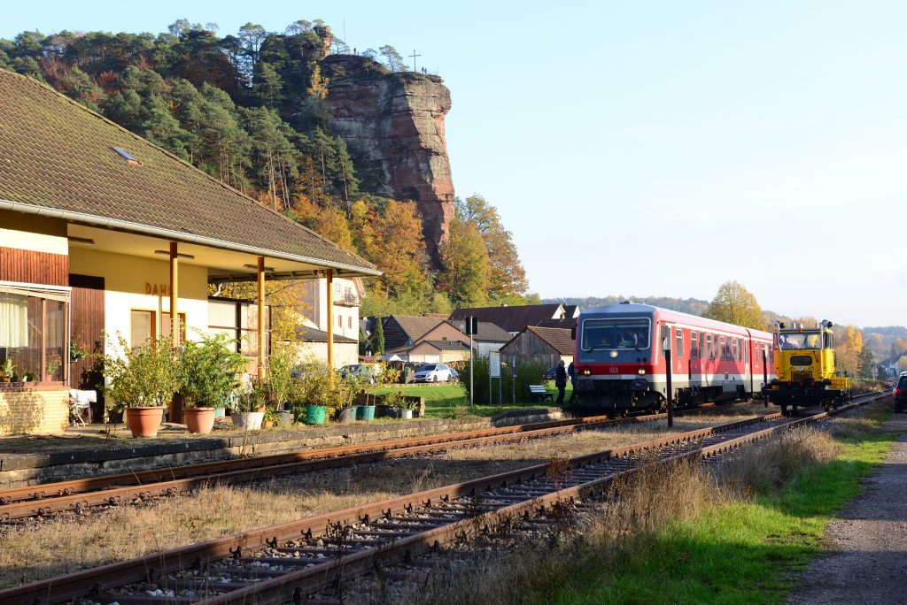
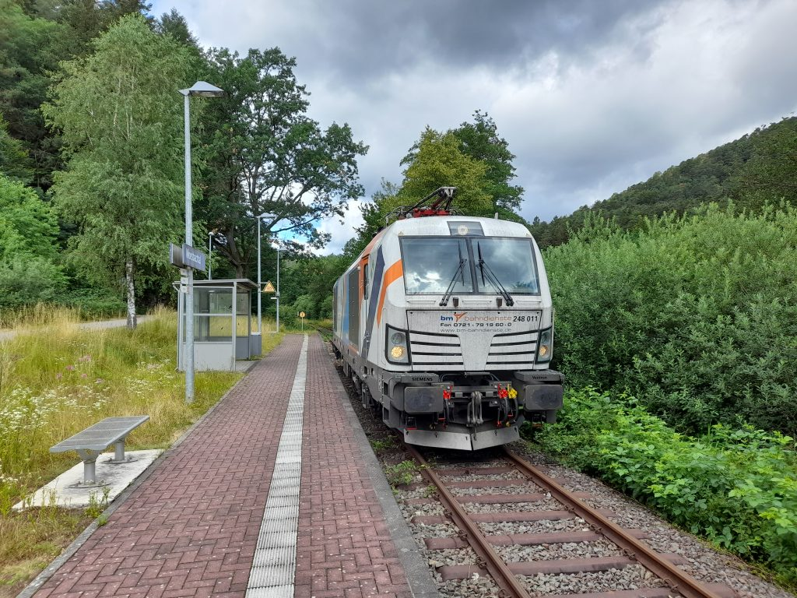
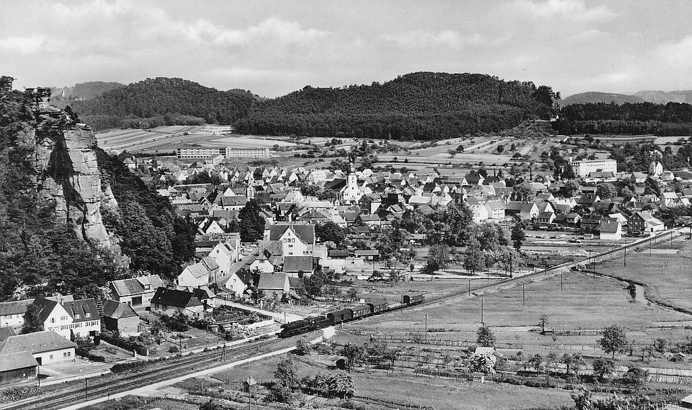

Seit 1932 unterwegs im Dahner Felsenland
Die Wieslauterbahn
Eine der schönsten Nebenbahnstrecken Deutschlands: Der historische „Bundenthaler” verbindet Hinterweidenthal Ost mit Dahn Süd und Bundenthal-Rumbach – mitten durch die Sandsteinfelsen der Südwestpfalz.

Foto des Monats
Zukunft auf der Wieslauterbahn
Die Hybridlok Siemens Vectron 248 011 passiert den Haltepunkt Moosbachtal bei Dahn – ein Ausblick auf mögliche zukünftige Antriebskonzepte auf der Strecke.
Foto: Archiv Eisenbahnfreunde Dahn e.V. · 24.06.2022
Zum Fotoarchiv →Presse & Aktuelles
Alle Meldungen →Verein
Eisenbahnfreunde Dahn e.V. – Mitglied werden & mitgestalten.
Strecke
Von Hinterweidenthal Ost durch das Dahner Felsenland bis Bundenthal-Rumbach.
Stationen
Alle Halte im Überblick – mit Umsteige- und Parkinfos.
Geschichte
Von 1911 bis heute: Bau, Stilllegung und Wiederbelebung durch den Verein.

Seit über 100 Jahren
Eine bewegte Geschichte
Vom Bau 1911 über die Stilllegung 1966 bis zur Wiederinbetriebnahme durch ehrenamtliche Eisenbahnfreunde in den 1990er-Jahren – entdecken Sie die Epochen der Wieslauterbahn im interaktiven Zeitstrahl.